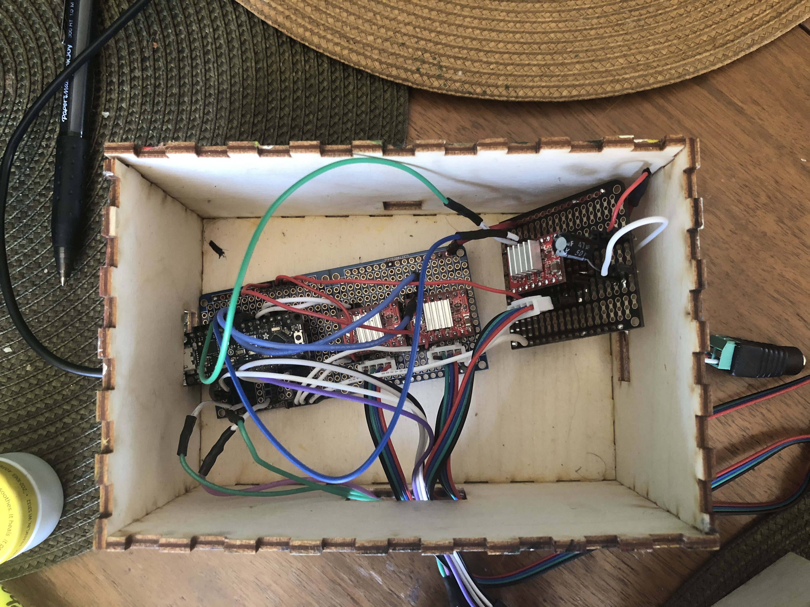

This was the final to my robotics class that I had taken in college. Inspired by the gears and rods on steam locomotives. I had wanted to make something where you would control the speed of the gears based on your dispense to the machine.